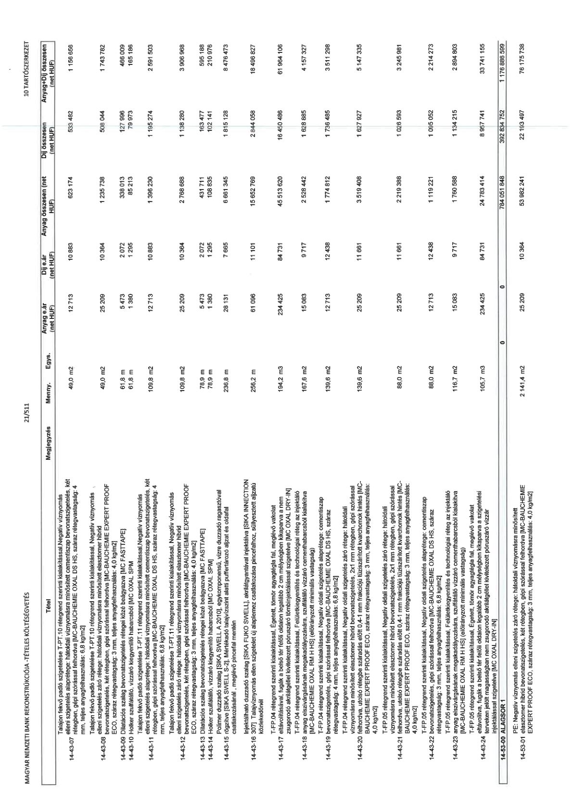

| Tétel | Megjegyzés | Menny. | Egys. | Anyag e.ár (net HUF) | Díj e.ár (net HUF) | Anyag összesen (net HUF) | Díj összesen (net HUF) | Anyag+Díj összesen (net HUF) |
|---|---|---|---|---|---|---|---|---|
| 14-34-69 BELSŐ UDVAR alaplemez betonacél szerelés 12 mm feletti átmérőben | NaN | 21,2 | t | 492 875 | 216 460 | 10 448 950 | 4 588 952 | 15 037 902 |
| 14-34-70 ALAGSOR ÉSZAK alaplemez betonozása mixerbetonnal, pumpás bedolgozással, C 30/37-XC2-XF1-16-F3 | NaN | 156,0 | m3 | 39 862 | 14 068 | 6 218 472 | 2 194 608 | 8 413 080 |
| 14-34-71 ALAGSOR DÉL alaplemez betonozása mixerbetonnal, pumpás bedolgozással, C 30/37-XC2-XF1-16-F3 | NaN | 461,0 | m3 | 39 862 | 14 068 | 18 376 382 | 6 485 348 | 24 861 730 |
| 14-34-72 BELSŐ UDVAR alaplemez betonozása mixerbetonnal, pumpás bedolgozással, C 30/37-XC2-XF1-16-F3 | NaN | 326,0 | m3 | 39 862 | 14 068 | 12 995 012 | 4 586 168 | 17 581 180 |
| 14-34-73 Szigetelésvezető falak ALAGSOR ÉSZAK betonozása mixerbetonnal, pumpás bedolgozással, C 30/37-XC2-XF1-16-F3 | NaN | 15,2 | m3 | 39 862 | 16 019 | 605 902 | 243 489 | 849 391 |
| 14-34-74 Szigetelésvezető falak ALAGSOR DÉL betonozása mixerbetonnal, pumpás bedolgozással, C 30/37-XC2-XF1-16-F3 | NaN | 11,2 | m3 | 39 862 | 16 019 | 446 454 | 179 413 | 625 867 |
| 14-34-75 Szigetelésvezető falak BELSŐ UDVAR betonozása mixerbetonnal, pumpás bedolgozással, C 30/37-XC2-XF1-16-F3 | NaN | 34,7 | m3 | 39 862 | 16 019 | 1 383 211 | 555 859 | 1 939 070 |
| 14-34-76 Zsompok betonozása ALAGSOR ÉSZAK betonozása mixerbetonnal, pumpás bedolgozással, C 30/37-XC2-XF1-16-F3 | NaN | 8,3 | m3 | 39 862 | 20 622 | 330 855 | 171 163 | 502 018 |
| 14-34-77 Zsompok betonozása ALAGSOR DÉL betonozása mixerbetonnal, pumpás bedolgozással, C 30/37-XC2-XF1-16-F3 | NaN | 3,2 | m3 | 39 862 | 20 622 | 127 558 | 65 990 | 193 548 |
| 14-34-78 Zsompok betonozása BELSŐ UDVAR betonozása mixerbetonnal, pumpás bedolgozással, C 30/37-XC2-XF1-16-F3 | NaN | 5,1 | m3 | 39 862 | 20 622 | 203 296 | 105 172 | 308 468 |
| 14-34-79 Pillérfészek betonozás ALAGSOR ÉSZAK betonozása mixerbetonnal, pumpás bedolgozással, C 30/37-XC2-XF1-16-F3 | NaN | 2,8 | m3 | 39 862 | 20 622 | 111 614 | 57 742 | 169 356 |
| 14-34-80 Pillérfészek betonozás ALAGSOR DÉL betonozása mixerbetonnal, pumpás bedolgozással, C 30/37-XC2-XF1-16-F3 | NaN | 9,0 | m3 | 39 862 | 20 622 | 358 758 | 185 598 | 544 356 |
| 14-34-81 Pillérfészek betonozás BELSŐ UDVAR betonozása mixerbetonnal, pumpás bedolgozással, C 30/37-XC2-XF1-16-F3 | NaN | 20,8 | m3 | 39 862 | 20 622 | 829 130 | 428 938 | 1 258 068 |
| 14-34-82 Betonacél tüskézés, befúrt, ragasztott Fischer FIS EM Plus/390S, 14-es acél d=20/120mm, ALAGSOR ÉSZAK | NaN | 182,0 | db | 1 934 | 1 127 | 351 988 | 205 114 | 557 102 |
| 14-34-83 Betonacél tüskézés, befúrt, ragasztott Fischer FIS EM Plus/390S, 14-es acél d=20/120mm, ALAGSOR DÉL | NaN | 72,0 | db | 1 934 | 1 127 | 139 248 | 81 144 | 220 392 |
| 14-34-84 Betonacél tüskézés, befúrt, ragasztott Fischer FIS EM Plus/390S, 14-es acél d=20/120mm, BELSŐ UDVAR | NaN | 52,0 | db | 1 934 | 1 127 | 100 568 | 58 604 | 159 172 |
| 14-34-85 Betonacél tüskézés, befúrt, ragasztott Fischer FIS EM Plus/390S, 14-es acél d=20/200mm, ALAGSOR ÉSZAK | NaN | 6,0 | db | 2 642 | 1 454 | 15 852 | 8 724 | 24 576 |
| 14-34-86 Betonacél tüskézés, befúrt, ragasztott Fischer FIS EM Plus/390S, 14-es acél d=20/200mm, ALAGSOR DÉL | NaN | 28,0 | db | 2 642 | 1 454 | 73 976 | 40 712 | 114 688 |
| 14-34-87 Betonacél tüskézés, befúrt, ragasztott Fischer FIS EM Plus/390S, 14-es acél d=20/200mm, BELSŐ UDVAR | NaN | 16,0 | db | 2 642 | 1 454 | 42 272 | 23 264 | 65 536 |
| 14-34-88 Betonacél tüskézés, befúrt, ragasztott Fischer FIS EM Plus/390S, 20-as acél d=25/300mm, ALAGSOR ÉSZAK | NaN | 124,0 | db | 4 236 | 1 984 | 525 264 | 246 016 | 771 280 |
| 14-34-89 Betonacél tüskézés, befúrt, ragasztott Fischer FIS EM Plus/390S, 20-as acél d=25/300mm, ALAGSOR DÉL | NaN | 48,0 | db | 4 236 | 1 984 | 203 328 | 95 232 | 298 560 |
| 14-34-90 Betonacél tüskézés, befúrt, ragasztott Fischer FIS EM Plus/390S, 20-as acél d=25/300mm, BELSŐ UDVAR | NaN | 32,0 | db | 4 236 | 1 984 | 135 552 | 63 488 | 199 040 |
| 14-34-91 Szigetelésvédő falak ALAGSOR ÉSZAK bontása | NaN | 10,2 | m2 | 0 | 3 874 | 0 | 39 515 | 39 515 |
| 14-34-92 Szigetelésvédő falak ALAGSOR DÉL bontása | NaN | 16,1 | m2 | 0 | 3 874 | 0 | 62 371 | 62 371 |
| 14-34-93 Szigetelésvédő falak BELSŐ UDVAR bontása | NaN | 53,3 | m2 | 0 | 3 874 | 0 | 206 484 | 206 484 |
| 14-34-94 Szigetelésvédő falak zsaluzatának bontása, ALAGSOR ÉSZAK | NaN | 13,6 | fm | 0 | 1 658 | 0 | 22 549 | 22 549 |
| 14-34-95 Szigetelésvédő falak zsaluzatának bontása, ALAGSOR DÉL | NaN | 44,3 | fm | 0 | 1 658 | 0 | 73 450 | 73 450 |
| 14-34-96 Szigetelésvédő falak zsaluzatának bontása, BELSŐ UDVAR | NaN | 103,4 | fm | 0 | 1 658 | 0 | 171 437 | 171 437 |
| 14-34-97 Szigetelésvezető falak ALAGSOR ÉSZAK, ALAGSOR DÉL, BELSŐ UDVAR, vb. szerkezet vágás, h=25-45cm | NaN | 33,3 | m2 | 1 546 | 12 552 | 51 482 | 417 982 | 469 464 |
